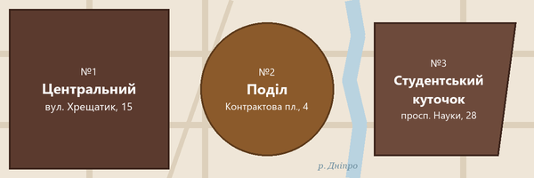

Про нашу мережу
До мережі «Coffee Shop» входять три кав'ярні в різних районах міста. Ми готуємо класичні та авторські напої із зерна власного обсмаження, а постійним гостям нараховуємо бонуси на картку лояльності. За рік наші бариста готують понад 105 чашок кави, а зал Центрального філіалу має площу 85 м2.
Ця сторінка є головною для працівників мережі. Звідси можна перейти до оформлення замовлень, обліку клієнтів, персоналу та звітів. Більше про історію напою можна прочитати у статті «Кава» у Вікіпедії.
Статус мережі: усі філіали працюють у звичайному режимі.
Кава для нас не просто напій, а коротка пауза серед щоденної метушні. Тому кожну чашку ми готуємо так, ніби вона перша за день.
Ірина Коваль, шеф-бариста мережі
Пропозиції тижня
Лавандовий раф за спеціальною ціною:
80 грн 70 грн
(пропозиція діє до 31.10.2026)
Друга чашка зі знижкою 50% щодня після 18:00 у всіх філіалах.
Сніданок до 11:00: круасан + американо за 75 грн замість 85 грн.
Цікаво: молекула кофеїну має формулу C8H10N4O2, а для екстракції еспресо ми використовуємо воду температурою 92-94 oC.
Меню та стандарти якості
Кавові зерна
- Арабіка 100%: м'який смак, фруктові нотки та легка кислинка.
- Бленд арабіка / робуста (80/20): насичений еспресо зі щільною пінкою.
- Моносорти: Ефіопія, Колумбія, Бразилія (оновлюємо щомісяця).
Для гостей
- безкоштовний Wi-Fi та розетки біля кожного столика;
- знижка 5 грн, якщо кава з собою у власну чашку;
- рослинне молоко (вівсяне, мигдальне) без доплати.
Як ми готуємо капучино
- Мелемо 18 г зерна безпосередньо перед приготуванням.
- Темперуємо каву із зусиллям близько 15 кг.
- Екстрагуємо еспресо 25-28 секунд під тиском 9 бар.
- Готуємо молоко:
- наливаємо холодне молоко в пітчер;
- збиваємо парою до 60-65 oC;
- вливаємо в еспресо, малюючи візерунок.
- Подаємо гостю разом зі склянкою води.
Розділи меню
- Класичні напої (еспресо, допіо, американо)
- Кава з молоком (капучино, лате, флет вайт)
- Авторські напої (лавандовий раф, мокачино)
- Випічка та десерти (круасани, чізкейк)
Словник бариста
- Еспресо
- Концентрований напій об'ємом 30 мл, основа більшості кавових напоїв.
- Американо
- Еспресо, розбавлений гарячою водою.
- Капучино
- Еспресо, гаряче молоко та молочна піна приблизно в рівних частинах.
- Лате
- Ніжний напій з великою кількістю молока і тонким шаром піни.
Новини мережі
Відкрили літню терасу на Подолі
На Контрактовій площі запрацювала тераса на 20 місць. Вона буде відкрита до перших холодів.
12.09.2026, адміністрація мережі
Нові моносорти з Ефіопії
У продажу з'явилося зерно Yirgacheffe з нотами бергамоту та жасмину.
Спробувати його можна як еспресо або фільтр-каву.
25.09.2026, відділ закупівель
Майстер-клас з латте-арту
Щосуботи о 12:00 у Центральному філіалі проводимо безкоштовний майстер-клас для гостей.
Кількість місць обмежена.
01.10.2026, школа бариста
Філіали мережі
| № | Філіал | Контакти | Графік роботи | ||
|---|---|---|---|---|---|
| Адреса | Телефон | Пн-Пт | Сб-Нд | ||
| 1 | Центральний | вул. Хрещатик, 15 | +380 (44) 111-22-33 | 07:30-22:00 | 08:30-23:00 |
| 2 | Кав'ярня на Подолі | Контрактова площа, 4 | +380 (44) 222-33-44 | 08:00-21:30 | 09:00-22:00 |
| 3 | Студентський куточок | просп. Науки, 28 | +380 (44) 333-44-55 | 08:00-20:00 | |
Карта мережі
Наведіть курсор на філіал, щоб побачити адресу, і натисніть на нього, щоб відкрити розташування на Google Maps. Клік поза філіалами переходить до таблиці філіалів.

Швидке замовлення
Касовий модуль можна відкрити прямо тут, не залишаючи головну сторінку: